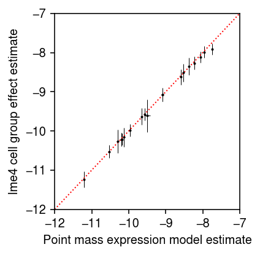
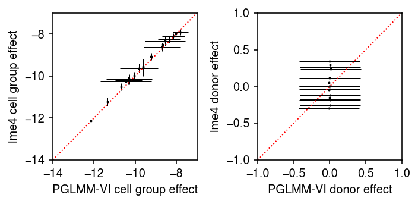
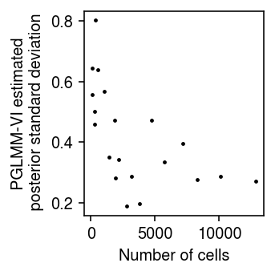
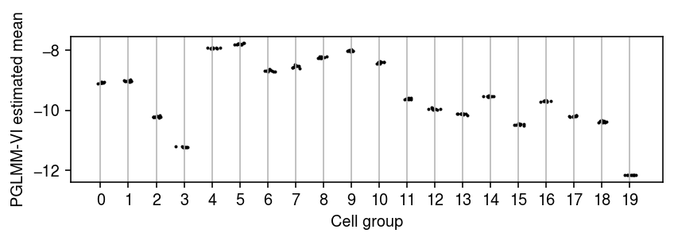
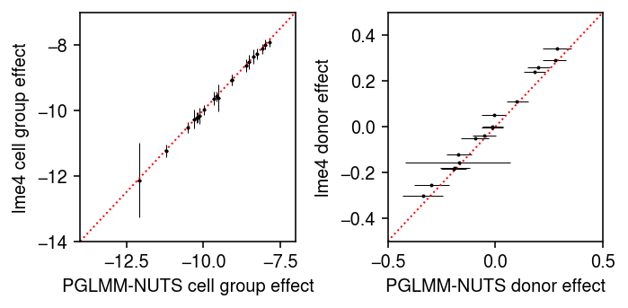
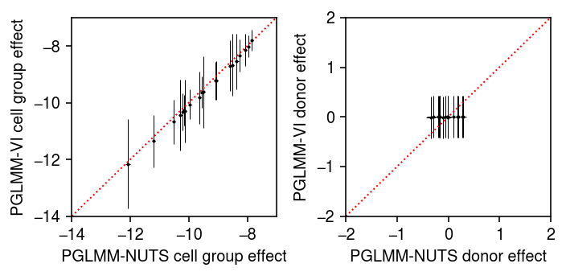

Poisson GLMM for differential expression
Table of Contents
Introduction
Valentine Svensson suggested a Poisson GLMM to test for differential expression between scRNA-seq samples in two conditions, accounting for inter-individual variation in mean gene expression (within conditions) \( \DeclareMathOperator\N{\mathcal{N}} \DeclareMathOperator\E{E} \DeclareMathOperator\KL{\mathcal{KL}} \newcommand\const{\mathrm{const}} \newcommand\md{\mathbf{D}} \newcommand\mi{\mathbf{I}} \newcommand\mh{\mathbf{H}} \newcommand\mk{\mathbf{K}} \newcommand\mx{\mathbf{X}} \newcommand\my{\mathbf{Y}} \newcommand\mz{\mathbf{Z}} \newcommand\su{\sigma_u} \newcommand\vb{\mathbf{b}} \newcommand\vu{\mathbf{u}} \newcommand\vy{\mathbf{y}} \newcommand\vmu{\boldsymbol{\mu}} \)
\begin{align} y_i \mid y_{i+}, \lambda_i &\sim \operatorname{Poisson}(y_{i+} \lambda_i)\\ \ln\lambda_i &= (\mx\vb + \mz\vu)_i\\ \vb &\sim \N(0, \mi)\\ \vu &\sim \N(0, \su^2 \mi), \end{align}where
- \(y_i\) is the observed molecule count (of some gene \(j\)) in cell \(i\)
- \(y_{i+}\) the total molecule count in cell \(i\)
- \(\mx\) is a binary matrix mapping samples to “cell groups” (cell type by tissue by condition)
- \(\vb\) denotes the fixed effects (cell group means)
- \(\mz\) is a binary matrix mapping samples to donors
- \(\vu\) denotes the random effects (donor effects)
However, direct application of variational inference to approximate the posterior \(p(\vb, \vu \mid \mx, \mz, \vy)\), implemented in Tensorflow Probability, is reported to perform poorly. Here, we show that some modifications are needed to get reasonable estimates.
Setup
import functools as ft import numpy as np import pandas as pd import scipy.stats as st import torch # import torch.utils.tensorboard as tb import torch.utils.data as td import pyro
%matplotlib inline %config InlineBackend.figure_formats = set(['retina'])
import matplotlib.pyplot as plt plt.rcParams['figure.facecolor'] = 'w' plt.rcParams['font.family'] = 'Nimbus Sans'
Data
Download the data from Borland et al. 2020
curl -O "https://raw.githubusercontent.com/vals/Blog/master/201226-glmm-vi/zeb2_table.csv"
Download the fitted lme4 model.
curl -O "https://raw.githubusercontent.com/vals/Blog/master/201226-glmm-vi/lme4/fixed_effects.csv" curl -O "https://raw.githubusercontent.com/vals/Blog/master/201226-glmm-vi/lme4/random_effects.csv"
Results
LMM
To gain more insight into GLMM inference, first consider an ordinary LMM
\begin{align} \vy \mid \mx, \mz, \vb, \vu, \sigma^2 &\sim \N(\mx \vb + \mz \vu, \sigma^2 \mi)\\ \vu \mid \sigma^2, \sigma_u^2 &\sim \N(0, \sigma^2 \sigma_u^2 \mi). \end{align}Using properties of the Gaussian distribution,
\begin{align} \mz \vu \mid \sigma^2, \sigma_u^2 &\sim \N(0, \sigma^2 \sigma_u^2 \mk)\\ \vy \mid \mx, \mz, \vb, \sigma^2, \sigma_u^2 &\sim \N(\mx\vb, \sigma^2 \mh), \end{align}where \(\mk = \mz\mz'\), \(\mh = \mi + \sigma_u^2 \mk\), and one can maximize the marginal likelihood to recover point estimates \(\hat{\vb}, \hat\sigma^2, \hat{\sigma_u^2}\). Briefly, for fixed \(\sigma^2 \mh\), \(\hat{\vb}\) is the solution to generalized least squares; for fixed \(\vb\), gradients with respect to \(\sigma^2, \sigma_u^2\) are available. Further,
\begin{align} \left[\begin{array}{c} \vy \\ \vu \end{array}\right] \mid \mx, \mz, \vb, \sigma^2, \sigma^2_u &\sim \mathcal{N} \left( \left[\begin{array}{c} \mx\vb \\ \mathbf{0} \end{array}\right], \sigma^2 \left[\begin{array}{cc} \mh & \sigma^2_u \mk \\ \sigma^2_u \mk & \sigma^2_u \mk \end{array}\right] \right)\\ \vu \mid \mx, \mz, \vy, \vb, \sigma^2, \sigma^2_u &\sim \mathcal{N}\left(\frac{\sigma^2_u}{\sigma^2} \mk\mh^{-1}(\vy - \mx\vb), \sigma^2_u \mk (\mi - \mh^{-1})\right). \end{align}In words, the posterior of the random effects (given the fixed effects, the model hyperparameters, and the data) is analytic, Gaussian, and dependent on the fixed effects.
Poisson GLMM
In the (Poisson) GLMM, the fundamental difficulty in maximum likelihood
estimation is that the assumed distribution of \(p(\vu)\) is non-conjugate
to the likelihood. This fact means that even evaluating the likelihood to
maximize it is difficult. How does lme4 perform inference for GLMMs?
According
to the documentation, glmer evaluates the log likelihood by using
adaptive Gauss-Hermite quadrature, and
according
to the source code, optimizes the log likelihood using a derivative-free
approach.
The fundamental difficulty in Bayesian inference is that the priors
\(p(\vb), p(\vu)\) are non-conjugate. One possibility is to use
MCMCglmm,
suggested by Fabio Morgante, which uses a
model-specific sampling algorithm. However, this package appears to be
superseded by brms (which calls
into stan). We use NUTS implemented in pyro
below.
Another possibility is to use variational inference, assuming a factorized approximating family \(q(\vb, vu) = q(\vb)q(\vu)\). However, it is easy to show that the optimal variational approximating distribution \(q^*(\vb)\), over all distributions, is non-standard. This result follows from examining the log joint probability
\begin{equation} \ln p(\vy, \vb, \vu \mid \mx, \mz, \sigma_u^2) = \sum_i \left[y_i (\ln y_{i+} + (\mx\vb + \mz\vu)_i) - y_{i+}\exp((\mx\vb + \mz\vu)_i)\right] - \frac{\vb'\vb}{2} - \frac{\vu'\vu}{2\sigma_u^2} + \const, \end{equation}and collecting terms that involve \(\vb\) (Blei et al. 2017)
\begin{equation} q^*(\vb) \propto \exp\left(\sum_i \Big[y_i (\mx\vb)_i - y_{i+} \E[\exp((\mx\vb + \mz\vu)_i)]\Big] - \frac{\vb'\vb}{2}\right). \end{equation}This result suggests that naively assuming a conjugate variational approximation (i.e., Gaussian) may not work well (specifically, to characterize the posterior variance; it is reasonable to assume that the data are very informative about the mean). Further, the true posterior \(p(\vb, \vu \mid \cdot)\) does not factorize, so naively assuming a factorized variational approximation might not work well.
Remark One way to get around the first limitation could be normalizing flows.
In the GLMM, the primary inference goal could be to estimate the posterior \(p(\vb \mid \mx, \my, \mz)\), i.e., integrating over uncertainty in \(\su^2\). However, a simpler approach is to only seek a point estimate for \(\su^2\), and estimate the posterior \(p(\vb \mid \mx, \my, \mz, \su^2)\). This simpler problem is an instance of Variational Empirical Bayes (Wang et al. 2020), which is a generalization of Variational Bayes Expectation Maximization (Beal 2003).
Variational Empirical Bayes
Implement VEB to yield a point estimate for \(\su^2\) and an approximate posterior \(p(\vb \mid \mx, \my, \mz, \su^2)\). The ELBO is
\begin{equation} \ell = \E_{q(\vb, \vu)}\left[\sum_i \ln p(y_i \mid y_{i+}, \mx, \mz, \vb, \vu)\right] - \KL(q(\vb) \Vert p(\vb)) - \KL(q(\vu) \Vert p(\vu)), \end{equation}where the expectation is replaced by a Monte Carlo integral (Kingma and Welling 2014, Rezende et al. 2014, Titsias and Lázaro-Gredilla 2014), and the KL divergences are analytic (for the choice of conjugate variational approximating family).
Remark As written, the model is not identifiable when \(\mx\) and \(\mz\) are completely confounded, i.e., co-linear. Therefore, an informative prior is \(p(\vb)\) is needed. We describe one possibility below.
class PoissonGLMM(torch.nn.Module): def __init__(self, n_cell_groups, n_donors, init=None, prior_b=None): super().__init__() if init is None: init = torch.zeros([n_cell_groups, 1]) else: init = torch.tensor(init, dtype=torch.float).reshape(-1, 1) if prior_b is None: self.pb_mean = torch.nn.Parameter(torch.zeros([n_cell_groups, 1])) else: self.pb_mean = torch.nn.Parameter(torch.tensor(prior_b, dtype=torch.float).reshape(-1, 1)) self.pb_raw_scale = torch.nn.Parameter(torch.zeros([n_cell_groups, 1])) self.qb_mean = torch.nn.Parameter(init) self.qb_raw_scale = torch.nn.Parameter(torch.zeros([n_cell_groups, 1])) self.pu_raw_scale = torch.nn.Parameter(torch.zeros([1])) self.qu_mean = torch.nn.Parameter(torch.zeros([n_donors, 1])) self.qu_raw_scale = torch.nn.Parameter(torch.zeros([n_donors, 1])) def forward(self, y, x, s, z, n_samples): _s = torch.nn.functional.softplus qu = torch.distributions.Normal( loc=self.qu_mean, scale=_s(self.qu_raw_scale)) qb = torch.distributions.Normal( loc=self.qb_mean, scale=_s(self.qb_raw_scale)) # [n_samples, batch_size, 1] zu = z @ qu.rsample(n_samples) xb = x @ qb.rsample(n_samples) # [n_samples, batch_size] mean = s * torch.exp(xb + zu).squeeze(-1) # [1] # # Important: this is analytic kl_b = torch.distributions.kl.kl_divergence( qb, torch.distributions.Normal( loc=self.pb_mean, scale=_s(self.pb_raw_scale))).sum() kl_u = torch.distributions.kl.kl_divergence( qu, torch.distributions.Normal( loc=0., scale=_s(self.pu_raw_scale))).sum() # [batch_size] err = torch.distributions.Poisson(rate=mean).log_prob(y).mean(dim=0) elbo = (err - kl_b - kl_u).sum() return -elbo def fit(self, data, n_samples=1, lr=1e-2, n_epochs=10): n_samples = torch.Size([n_samples]) opt = torch.optim.RMSprop(self.parameters(), lr=lr) for _ in range(n_epochs): for y, x, s, z in data: opt.zero_grad() loss = self.forward(y, x, s, z, n_samples) if torch.isnan(loss): raise RuntimeError('nan loss') loss.backward() opt.step() return self
Read the observed data.
dat = pd.read_csv('/scratch/midway2/aksarkar/singlecell/zeb2_table.csv', index_col=0)
Prepare the data.
y = torch.tensor(dat['ZEB2'], dtype=torch.float) x = torch.tensor(pd.get_dummies(dat['cell_group']).values, dtype=torch.float) s = torch.tensor(dat['total_count'], dtype=torch.float) z = torch.tensor(pd.get_dummies(dat['patient_assignment']).values, dtype=torch.float) train = td.DataLoader(td.TensorDataset(y, x, s, z), batch_size=32, shuffle=True, drop_last=True)
First, fit a point mass expression model to each cell group, ignoring donor effects. This approach assumes that there is no variability between donors within conditions.
t = (torch.log(y @ x) - torch.log(s @ x)).cpu().numpy() std = np.exp(-torch.log(s @ x).cpu().numpy() - t) lme4_fe = pd.read_csv('/scratch/midway2/aksarkar/singlecell/fixed_effects.csv') lme4_re = pd.read_csv('/scratch/midway2/aksarkar/singlecell/random_effects.csv')
Compare the lme4 MLE to the naive estimates. Error bars denote 95%
confidence intervals.
plt.clf() plt.gcf().set_size_inches(3, 3) plt.errorbar(t, lme4_fe['mean'], xerr=1.96 * std, yerr=1.96 * lme4_fe['std'], fmt='.', c='k', lw=0, ms=2, elinewidth=0.5) lim = [-12, -7] plt.plot(lim, lim, lw=1, ls=':', c='r') plt.xlim(lim) plt.ylim(lim) plt.xlabel('Point mass expression model estimate') plt.ylabel('lme4 cell group effect estimate') plt.tight_layout()

The result suggests that the observed data are very informative about mean gene expression, and that ignoring the variability within conditions (due to donor) may be justified. (Preliminary results in Lu 2018 suggest more generally that making the wrong assumption about expression variation in scRNA-seq data does not greatly impact inferences about mean gene expression). The result also suggests that naively assuming a standard Gaussian prior on \(\vb\) is not justified, since the data clearly indicate \(\vb\) is very different from 0. Further, our preliminary experiments show that assuming variance one in the prior leads to problems, since the approximate posterior is optimized by matching the prior variance. Instead, assume a prior
\begin{equation} \vb \sim \N(\vmu, \md), \end{equation}where \(\md\) is a diagonal matrix, and estimate \(\vmu, \md\) from the data via VEB.
run = 14 torch.manual_seed(run) m = PoissonGLMM(x.shape[1], z.shape[1], init=t, prior_b=t).fit(train, lr=1e-2, n_epochs=2)
Plot the model fit against the lme4 fit. Error bars denote 95%
credible/confidence intervals.
pm = m.qb_mean.detach().cpu().numpy() psd = torch.nn.functional.softplus(m.qb_raw_scale).squeeze().detach().cpu().numpy() plt.clf() fig, ax = plt.subplots(1, 2) fig.set_size_inches(5, 2.5) ax[0].errorbar(pm, lme4_fe['mean'], xerr=1.96 * psd, yerr=1.96 * lme4_fe['std'], fmt='.', c='k', lw=0, ms=2, elinewidth=0.5) lim = [-14, -7] ax[0].plot(lim, lim, lw=1, ls=':', c='r') ax[0].set_xlim(lim) ax[0].set_ylim(lim) ax[0].set_xlabel('PGLMM-VI cell group effect') ax[0].set_ylabel('lme4 cell group effect') pm = m.qu_mean.detach().cpu().numpy() psd = torch.nn.functional.softplus(m.qu_raw_scale).squeeze().detach().cpu().numpy() ax[1].errorbar(pm, lme4_re['mean'], xerr=1.96 * psd,fmt='.', c='k', lw=0, ms=2, elinewidth=0.5) ax[1].set_xlabel('PGLMM-VI donor effect') ax[1].set_ylabel('lme4 donor effect') lim = [-1, 1] ax[1].plot(lim, lim, lw=1, ls=':', c='r') ax[1].set_xlim(lim) ax[1].set_ylim(lim) fig.tight_layout()

Remark How is lme4 computing the posterior mean of the random effects,
given the data and the fixed effects?
Look at the posterior standard deviation against the number of cells in each cell group.
psd = torch.nn.functional.softplus(m.qb_raw_scale).squeeze().detach().cpu().numpy() plt.clf() plt.gcf().set_size_inches(2.5, 2.5) plt.scatter(x.sum(dim=0).cpu().numpy(), psd, s=2, c='k') plt.xlabel('Number of cells') plt.ylabel('PGLMM-VI estimated\n posterior standard deviation') plt.tight_layout()

The result suggests that the largest error bars do reflect the estimates with the greatest uncertainty, due to being supported by the fewest observations.
Next, look at the variability across multiple runs, starting from a deterministic initialization. Even with a deterministic initialization, one should expect each run to terminate at a different value since the gradient used in each update is (doubly) stochastic (due to using a Monte Carlo integral over the variational approximation to construct the stochastic computation graph for the ELBO, and due to using a minibatch of data to evaluate the ELBO).
n_trials = 10 fits = [] for i in range(n_trials): print(f'fitting {i}') torch.manual_seed(i) m = PoissonGLMM(x.shape[1], z.shape[1], init=t, prior_mean_cell_group=t) m.fit(train, lr=1e-2, n_epochs=2) fits.append(m)
temp = np.array([[m.q_mean_cell_group_mean.squeeze().detach().cpu().numpy()] for m in fits]).squeeze() plt.clf() plt.gcf().set_size_inches(6, 2) for j, pm in enumerate(temp.T): plt.scatter(j + np.random.normal(size=pm.shape[0], scale=0.1), pm, s=1, c='k') plt.xlabel('Cell group') plt.ylabel('PGLMM-VI estimated mean') plt.xticks(range(temp.shape[1])) plt.grid(axis='x', c='0.7') plt.tight_layout()

NUTS
It is unlikely that the posterior standard deviations are estimated correctly, since the true posterior is non-standard. Read the observed data.
dat = pd.read_csv('/scratch/midway2/aksarkar/singlecell/zeb2_table.csv', index_col=0)
Prepare the data.
y = torch.tensor(dat['ZEB2'], dtype=torch.float) x = torch.tensor(pd.get_dummies(dat['cell_group']).values, dtype=torch.float) s = torch.tensor(dat['total_count'], dtype=torch.float) z = torch.tensor(pd.get_dummies(dat['patient_assignment']).values, dtype=torch.float)
Use NUTS to sample from the true posterior.
def pglmm(y, s, x, z, prior_mean_b): psb = pyro.distributions.HalfNormal(1.) sb = pyro.sample('sb', psb) pb = pyro.distributions.Normal(prior_mean_b, sb) b = pyro.sample('b', pb) psu = pyro.distributions.HalfNormal(1.) su = pyro.sample('su', psu) pu = pyro.distributions.Normal(torch.zeros([z.shape[1]]), su) u = pyro.sample('u', pu) lam = s * torch.exp(x @ b + z @ u) return pyro.sample('y', pyro.distributions.Poisson(lam), obs=y) nuts = pyro.infer.mcmc.NUTS(ft.partial(pglmm, prior_mean_b=torch.tensor(t))) samples = pyro.infer.mcmc.MCMC(nuts, num_samples=500, warmup_steps=500) samples.run(y, s, x, z)
pb_post = samples.get_samples()['b'].numpy() pu_post = samples.get_samples()['u'].numpy()
Compare the posterior mean to the lme4 fit.
plt.clf() fig, ax = plt.subplots(1, 2) fig.set_size_inches(5, 2.5) ax[0].errorbar(pb_post.mean(axis=0), lme4_fe['mean'], xerr=abs(pb_post.mean(axis=0) - np.percentile(pb_post, [5, 95], axis=0)), yerr=1.96 * lme4_fe['std'], fmt='.', c='k', lw=0, ms=2, elinewidth=0.5) lim = [-14, -7] ax[0].plot(lim, lim, lw=1, ls=':', c='r') ax[0].set_xlim(lim) ax[0].set_ylim(lim) ax[0].set_xlabel('PGLMM-NUTS cell group effect') ax[0].set_ylabel('lme4 cell group effect') ax[1].errorbar(pu_post.mean(axis=0), lme4_re['mean'], xerr=abs(pu_post.mean(axis=0) - np.percentile(pu_post, [5, 95], axis=0)), fmt='.', c='k', lw=0, ms=2, elinewidth=0.5) ax[1].set_xlabel('PGLMM-NUTS donor effect') ax[1].set_ylabel('lme4 donor effect') lim = [-.5, .5] ax[1].plot(lim, lim, lw=1, ls=':', c='r') ax[1].set_xlim(lim) ax[1].set_ylim(lim) fig.tight_layout()

Compare the posterior samples to the variational approximation.
pm = m.qb_mean.detach().cpu().numpy() psd = torch.nn.functional.softplus(m.qb_raw_scale).squeeze().detach().cpu().numpy() plt.clf() fig, ax = plt.subplots(1, 2) fig.set_size_inches(5, 2.5) ax[0].errorbar(pb_post.mean(axis=0), pm, xerr=abs(pb_post.mean(axis=0) - np.percentile(pb_post, [5, 95], axis=0)), yerr=1.96 * psd, fmt='.', c='k', lw=0, ms=2, elinewidth=0.5) lim = [-14, -7] ax[0].plot(lim, lim, lw=1, ls=':', c='r') ax[0].set_xlim(lim) ax[0].set_ylim(lim) ax[0].set_xlabel('PGLMM-NUTS cell group effect') ax[0].set_ylabel('PGLMM-VI cell group effect') pm = m.qu_mean.detach().cpu().numpy() psd = torch.nn.functional.softplus(m.qu_raw_scale).squeeze().detach().cpu().numpy() ax[1].errorbar(pu_post.mean(axis=0), pm, xerr=abs(pu_post.mean(axis=0) - np.percentile(pu_post, [5, 95], axis=0)), yerr=1.96 * psd, fmt='.', c='k', lw=0, ms=2, elinewidth=0.5) ax[1].set_xlabel('PGLMM-NUTS donor effect') ax[1].set_ylabel('PGLMM-VI donor effect') lim = [-2, 2] ax[1].plot(lim, lim, lw=1, ls=':', c='r') ax[1].set_xlim(lim) ax[1].set_ylim(lim) fig.tight_layout()

The results suggest that the fully factored variational approximation is not a good approximation to the true posterior.